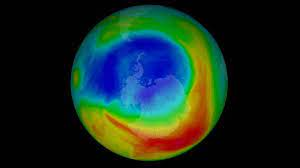
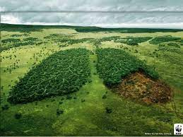
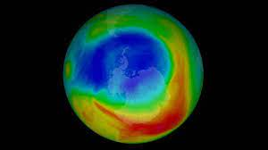
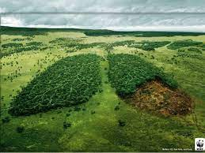

| Animales de pastoreo como los vacunos, son beneficiosos para la vegetación ya que sus heces abonan la tierra, los animales cabaña caprina, por ejemplo, con sus pezuñas y su forma de obtener los alimentos, erosionan la tierra, provocando graves daños.
| La lluvia es necesaria para el crecimiento vegetal, pero en exceso provoca ahogamiento de las plantas e inundaciones. El viento sirve para dispersión de polen y semillas, proceso benéfico para la vegetación, pero en demasía provoca erosión. La nieve quema las plantas, .sin embargo, ciertas plantas necesitan un golpe de fío para poder fructificar. La luz del sol que es fundamental en la fotosíntesis y para proporcionar calor, pero que en exceso genera sequía, lo que a su vez produce la esterilidad de la tierra.
| Existen relieves beneficiosos, como los montes repletos de árboles y perjudiciales, como los volcanes, que pueden afectar el terreno ya sea por ceniza o por riesgo de explosión magmática. El relieve actual de la Tierra es resultado de un largo proceso, según la teoría de la tectónica de placas, la litosfera está dividida en diversas placas tectónicas que se desplazan lentamente, lo cual provoca que la superficie terrestre esté en cambio continuo (teoría de la deriva continental). Un relieve alto provoca que las nubes y el viento no pasen, provocando que el lado afectado sea más árido.
| Es un factor que en gran manera afecta a la tierra porque los árboles y plantas tardan mucho en volver a crecer y son elementos importantes para el medio ambiente. Esta se combate pocas veces por medio de la reforestación.
|
| Este extremo también resulta perjudicial al entorno, pues demasiada vegetación absorbe todos los minerales de la superficie donde se encuentra, de modo que el suelo se queda sin minerales suficientes para su propio desarrollo. Una manera de evitar esto consiste en utilizar la Rotación de cultivos adecuada a la zona.
| Se le podría denominar un tipo de deforestación con efectos adversos masivos y duraderos en el terreno. La tierra que ha sido expuesta a incendio tardará cientos de años en volver a ser utilizable.
|
 


